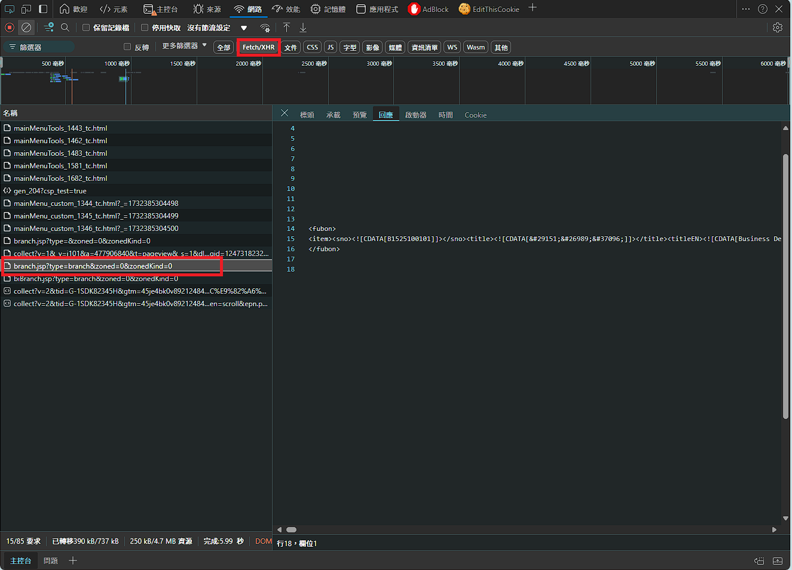
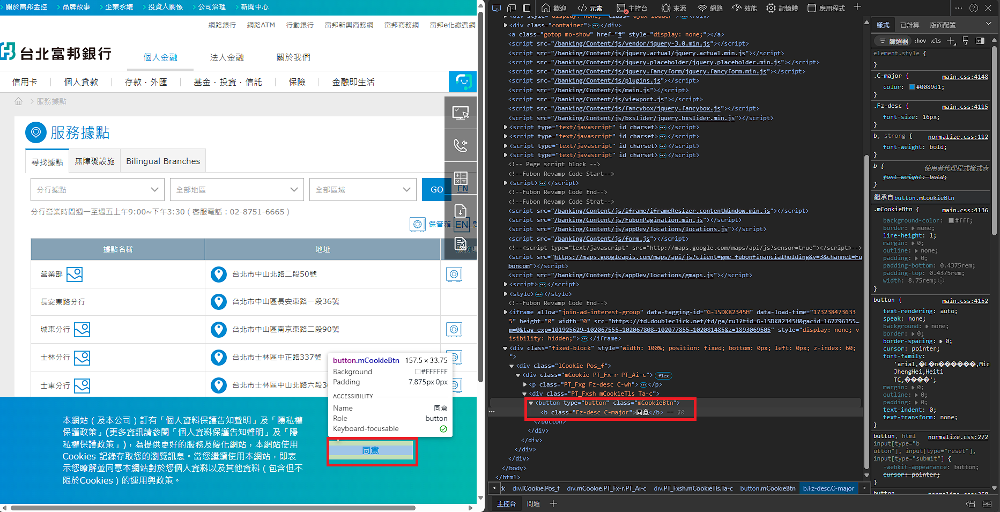
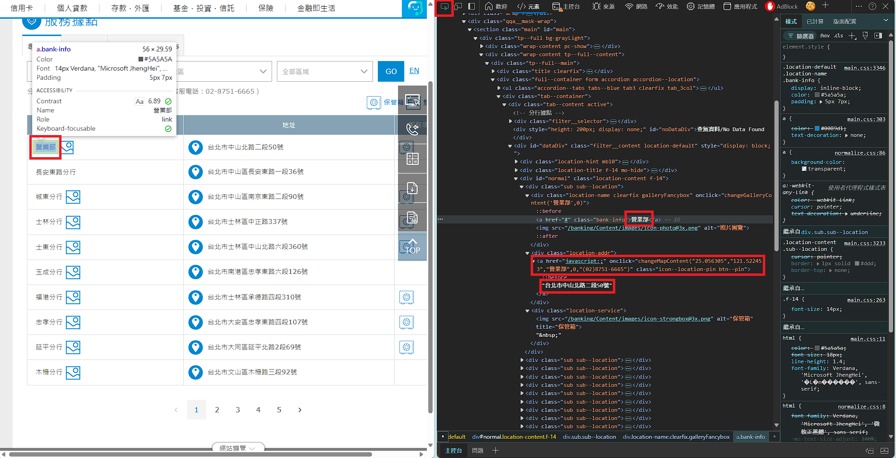

本專案展示如何使用 Python 爬取台北富邦銀行的分行位置資料，並提供兩種方法：
目標網頁: https://www.fubon.com/banking/locations/locations.htm?tab=1
透過觀察”網路”區的 Fetch/XHR，可以查到 XML 接口，直接含有分行資訊，透過 request 拿資料後解析，之後轉成 dataframe 物件: https://www.fubon.com/Fubon_Portal/banking/locations/branch.jsp?type=branch&zoned=0&zonedKind=0 
拿到的資料會像”xml_part.html”這樣，中文字的部分使用HTML 實體編碼格式，需要用 html.unescape()方法轉成一般中文字
爬取的內容會儲存在”branches_data_xml.csv”
若找不到這種資料帶入的方式，也可以使用 Selenium 自動化操作瀏覽器，模擬人工點擊，爬取網頁上的分行位置資訊。
先是 Debug 確認看看有沒有爬取到內容，可以看到 progress/test1.py 這支程式，他會把網頁內容寫入 debug_page_source.html。
觀察網頁內容，發現有個 cookies 接受訊息，不先按掉會無法點擊下一頁，如圖片
點擊之後，接下來要看要爬取的元素，如”營業部”、“台北市中山北路二段 50 號”、經緯度的位置，如紅框所示
這些內容我擷取了部分 html 放在”part.html”裡頭可以參考。其中經緯度比較難獲取，他是屬於”屬性裡的內容。解決方法請看程式碼。
換頁的部分，觀察換頁的位置，其 html 元素為”change_page.html”，找到 class=“next”來使用他。
最終爬取的內容會儲存在”branches_data_selenium.csv”